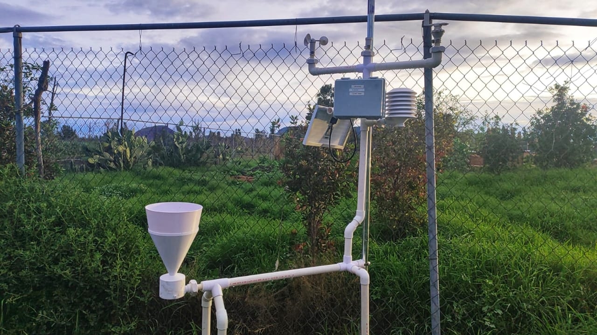
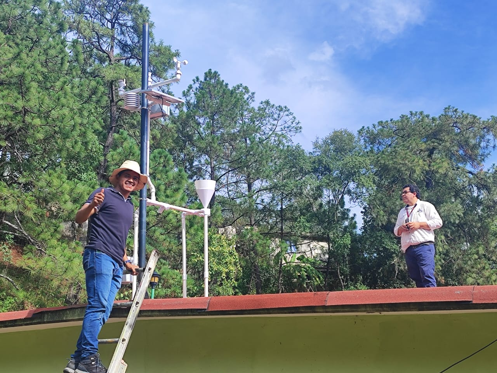
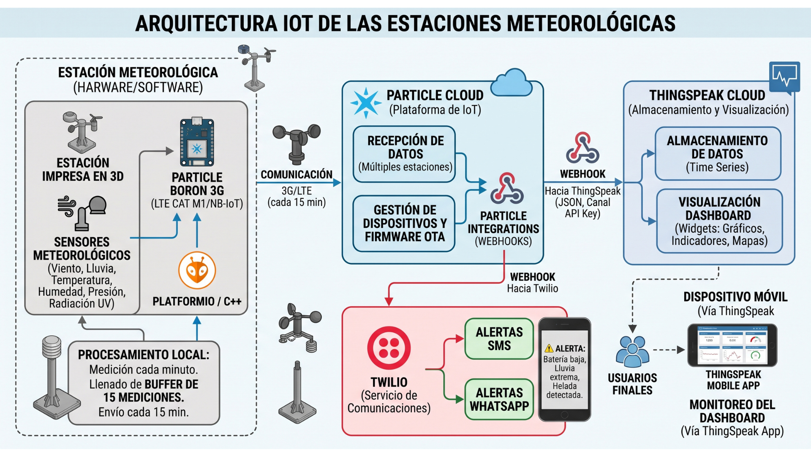
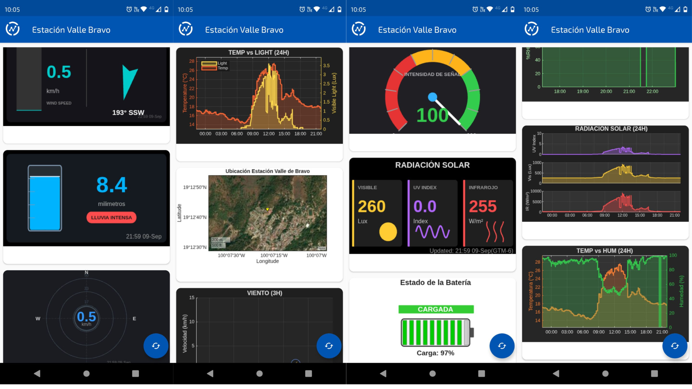

IoT Weather Stations for Environmental Monitoring in Central Mexico
Tecnologías Utilizadas
- Hardware: Particle Boron, Sensores meteorológicos
- Cloud: ThingSpeak, Twilio (para alertas SMS), Particle IO
- Software: PlatformIO, Python (para análisis de datos y visualización)
Descripción del Proyecto

Este proyecto consistió en el desarrollo y despligue en campo de 3 estaciones meteorológicas de alto desempeño y conectividad remota con el objetivo de monitorear el impacto del cambio climático en zonas vulnerables del centro de México (Tláhuac, Iztapalapa y Valle de Bravo). Como lider del proyecto, estuve a cargo de la implementación completa de la arquitectura, desde la instrumentación de los sensores meteorológicos, el desarrollo del firmware para la tarjeta de desarrollo, la configuración de la conectividad remota y la implementación del dashboard de visualización y análisisde datos.
Ventajas Competitivas
A defirencia de otras estaciones meteorológicas comerciales con monitoreo remoto WiFi, esta estación utiliza la señal 3G para transmitir los datos a la nube, lo cual permite su despliegue en zonas rurales y remotas donde no hay acceso a internet. Además, su mantenimiento es sencillo gracias a la fabricación mediante impresión 3D y el uso de componentes electrónicos de bajo costo. Esto permite que las estaciones puedan ser reparadas o reemplazadas fácilmente en caso de fallas. Todo esto sin comprometer la precisión y confiabilidad de las mediciones, ya que las estaciones fueron calibradas contra estaciones meteorológicas especializadas. Además, su servicio de notificación automática permite alertar a los usuarios en caso de condiciones extremas, lo cual es especialmente útil para la protección de cultivos y la prevención de riesgos.

Cada estación monitorea las siguientes variables:
- Temperatura
- Humedad
- Presión atmosférica
- Radiación solar (visible, UV, infrarroja)
- Precipitación pluvial
- Dirección y velocidad del viento
Arquitectura del Sistema
El hardware se implementaró en la tarjeta de desarrollo Particle Boron, la cual permite conectividad remota a través de la red celular 3G que aún cuenta con amplia cobertura en México. La estación mide datos ambientales cada minuto y los transmite a la nube de Particle IO en buffers cada 15 minutos. Es este punto, los datos se redireccionan mediante webhooks hacia la plataforma de ThingSpeak donde se preprocesan, almacenan y visualizan mediante un dashboard construido con MATLAB. Mediante un webkook enlazado a Twilio, se implementa un servicio de notificación automática que emite alertas en caso de condiciones extremas (heladas, lluvias torrenciales, radiación extrema y vientos fuertes). El dashboard puede visualizarse desde dispositivos móviles a través de una aplicación móvil. La arquitectura del sistema se muestra en la siguiente figura:

Dashboard de Visualización de Datos
Los datos puede monitorearse en tiempo real a través del siguiente Dashbord de ThingSpeak o través de una aplicación móvil. A continuación se muestran algunas capturas de pantalla del dashboard:

Visualización de Datos de Históricos
A continuación se muestran una serie de gráficas interctivos de Python (Plotly) con los datos históricos de temperatura, humedad relativa y presión en la estación meteorológica desplegada en Tláhuac, Ciudad de México. Los datos fueron recopilados durante un periodo de 10 días.
Probatorios
En el siguiente enlace puedes descargar un documento emitido por Clark University como probatorio de mi trabajo en este proyecto: Carta de Clark University
Agradecimientos
Este proyecto se llevó a cabo como una colaboración entre el Instituto de Ecología de la UNAM y Clark University (USA) con financiamiento de la National Science Foundation de los Estados Unidos.
Contacto
Para más información sobre el proyecto, incluyendo detalles técnicos, diagramas, código, etc., puedes enviarme un correo a cebada.fi.unam@gmail.com.